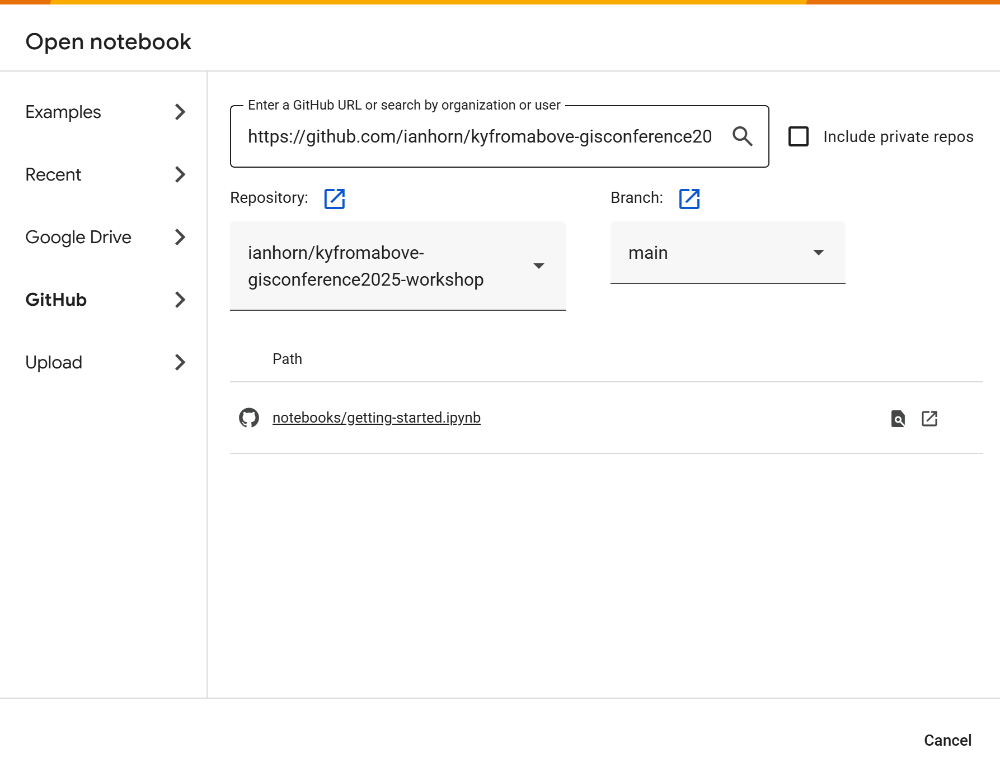

Setting up Google Colab
Colab is a hosted Jupyter Notebook service that requires no setup to use and provides free access to computing resources, including GPUs and TPUs. Colab is especially well suited to machine learning, data science, and education.
All you need is Google account to use Google Colab is a Google Account.
- Click the Google Colab Link
- Sign in
- At the top, click File --> Open Notebook
- Click on Github on the left.
- Enter
https://github.com/ianhorn/kyfromabove-gisconference2025-workshopas the github URL.
For step 5, you may need to click outside the search URL box for the Repository to change.
